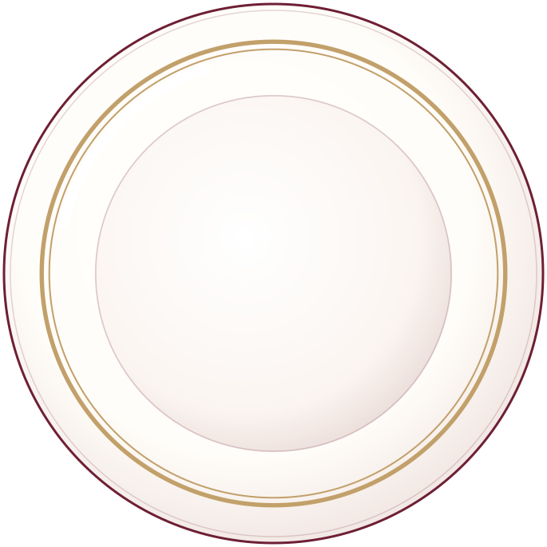
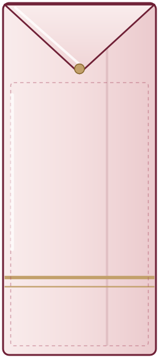
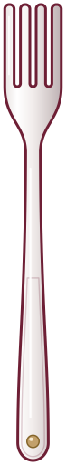
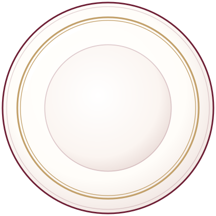
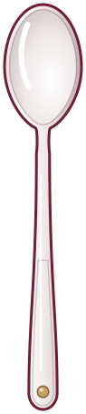
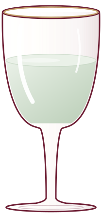
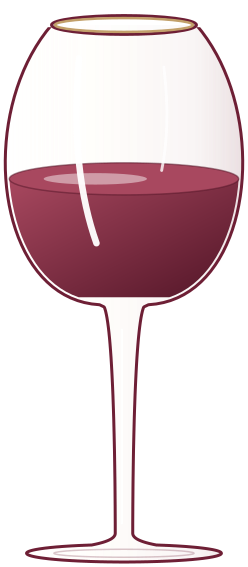
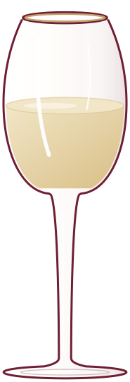

The Table, Decoded
Every fork has its place. Learn the layout once.
What you’ll find on the tableSource 4Emily Post Institute (n.d.-a)Source 5Emily Post Institute (n.d.-b)Source 9Lowry (2016)Source 12UC Riverside Career Center (n.d.)

5
1
3
10
11
12

13How many pieces? It depends on the menu. This formal table holds 10 pieces of cutlery: 8 before dessert, plus a dessert spoon and fork that may arrive with dessert. Emily Post’s own diagram adds a salad knife. A business lunch needs 5 core pieces (two forks, one knife, two spoons), plus optional extras.
Golden rules: work from the outside in, keep knife edges facing the plate, and never set more than three of any implement, except an oyster fork.
The b/d trickSource 11Missouri State Career Center (n.d.)
Make an OK sign with each hand: the left forms a b for bread, the right a d for drinks.
Set the Table
Drag or tap each piece into place. On a keyboard, use Tab and Enter.
Business lunch: 9 pieces. The bread plate, butter knife and dessert fork are optional extras.
Formal dinner: 16 pieces, with salad served after the main course. The napkin can go on the plate or left of the forks, and the two wine glasses can swap places.